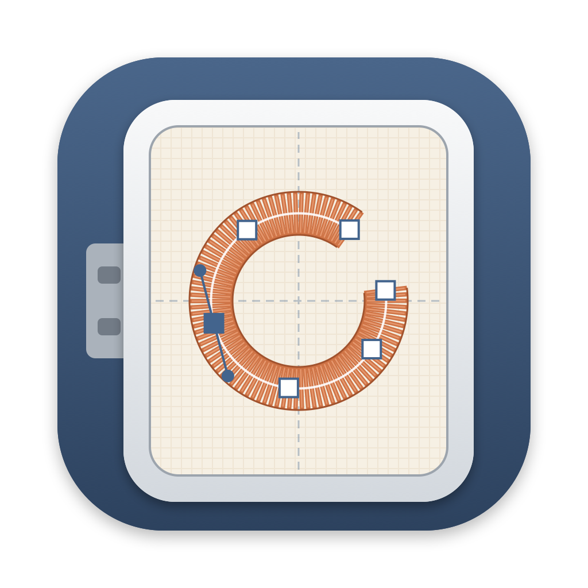
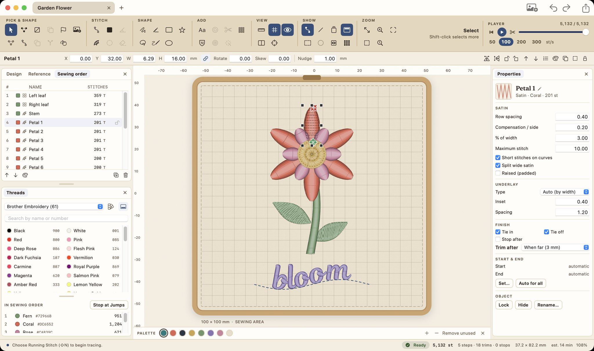
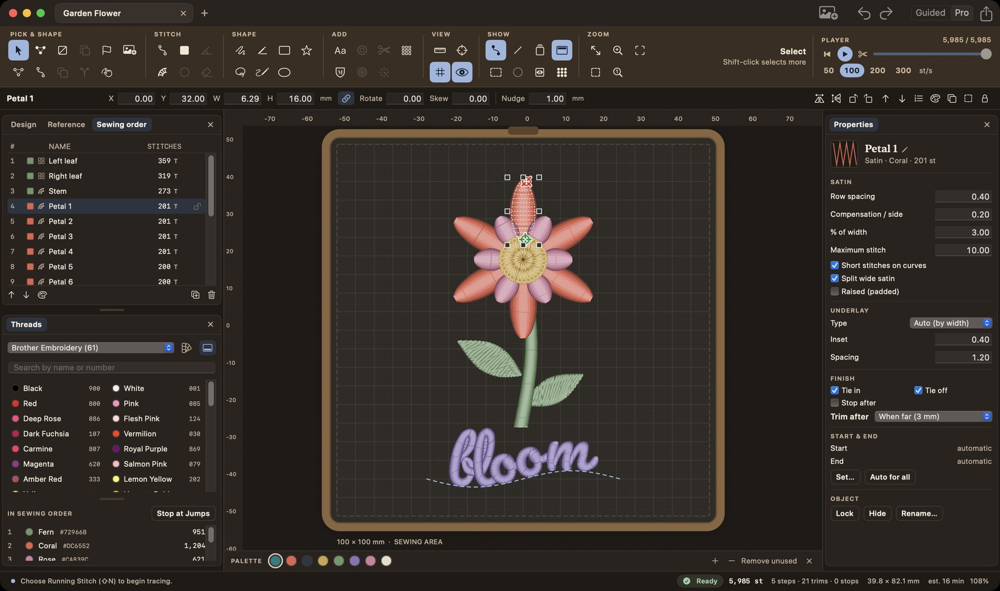

Start with your spark.
Trace a photo or sketch, bring in SVG outlines, or draw from scratch. Simple artwork can become fills with auto-digitizing.
PNG · JPEG · SVG · Your imagination
OpenHoopOpen-source embroidery for Mac
That sketch. Your club’s logo. A patch that’s entirely yours. Turn it into machine embroidery, right on your Mac.
Free & open source · Version 0.7.3 · macOS 14+ · Apple Silicon


Choose your lighting.
From screen to sewing machine
You bring the idea. OpenHoop gives you the tools to turn it into a stitch file.
Trace a photo or sketch, bring in SVG outlines, or draw from scratch. Simple artwork can become fills with auto-digitizing.
PNG · JPEG · SVG · Your imaginationShape running stitches, satin edges and textured fills. Add lettering, choose your colors, and fine-tune individual stitches.
Patches, monograms & everyday ideasPreview the sewing order, export a machine file, and take it to your embroidery machine. Start with a test sew-out on scrap fabric.
Seven machine formats, ready to exportA workspace that grows with you
Every tool and setting sits in plain view, and resting the pointer on any of them explains what it does.
Each tool has its own button, with its name and shortcut a hover away, so nothing hides in a menu.
Type a position, size or angle in the precision bar, and watch stitch counts and sewing time update as you work.
Arrange your panels, put the tools across the top or down the side, and customize every shortcut.
One stitch leads to another
Two leaves. A stem. Twelve satin petals and a word to finish. Follow the Garden Flower from its first stitch to its last.
A web preview of the design’s actual stitch sequence. Press play, or scrub through at your own pace.
The small things make the thing
Tools for the creative part. Controls for the practical part.
18 bundled embroidery fonts, plus fonts from your Mac. Straight text, curved lettering and monograms.
Satin patch borders and appliqué steps, with placement lines, tack-down stitches and stops.
Presets for woven, knit, towel, denim and felt. Adjust underlay, density and pull compensation as you test.
Built-in hoop sizes, thread charts and a printable production worksheet to keep beside your machine.
Each exported file is read back and checked before saving.
Free to make. Open to everyone.
OpenHoop is free, open-source software, built for the Mac. Download the app, make something, and help shape what comes next.